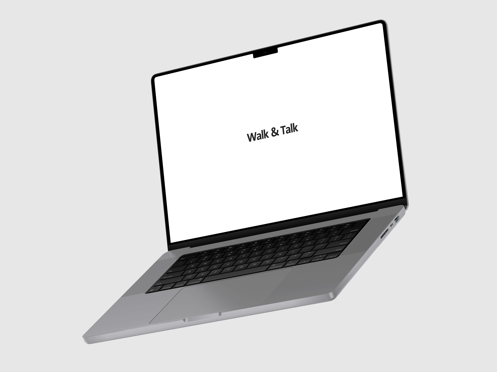
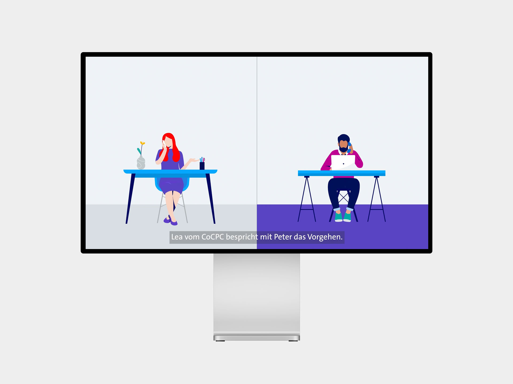

👋, ich bin Liam, Mediamatiker im 2. Lehrjahr
Aktuell nicht auf Projektsuche
Video | Interview
Ich habe bei diversen Folgen der Serie Walk and Talk von Swisscom
mitgearbeitet. Ich war jeweils bei der Produktion und auch der
Post Produktion involviert. Ich war beispielsweise bei der Folge
mit Oleg Auckenthaler und Carola Baumgartner dabei.
Intranet Artikel Oleg ↗
Intranet Artikel Carola ↗

Video | Animation
Für das Motion Blog Video, in dem wir als Motion uns selber
vorstellen, habe ich eine Illustration erstellt und diese
animiert. Ich habe ebenfalls bei der Post Produktion
mitgearbeitet.
Intranet Artikel ↗
E-Learning | Animation
Bei einer CoCPC Animation für ein E-Learning der Swisscom habe ich
Änderungen an einem der Videos vorgenommen und dieses im
E-Learning aktualisiert.
Sharepoint Link ↗

Bilder | Fotoshooting
Für die Group Security haben wir in Worblaufen und Zürich Fotos
der Mitarbeiter gemacht. Bei den Aufnahmen in Worblaufen habe ich
bei der Produktion sowie der Post Produktion mitgearbeitet.
Sharepoint Link ↗
Über
Aktuell arbeite ich bei Motion als Multimediaproducer und erstelle Videos, Animationen und Illustrationen für diverse Auftraggeber. Ich lerne bei diesen Aufträgen viel Neues und gebe immer Vollgas. Ich arbeite sehr konzentriert und schätze es, dass ich von Anfang bis Ende an einem Auftrag mitarbeiten darf. Unter anderem habe ich bei der Walk and Talk Serie mitgearbeitet. Durch diverse Animationen konnte ich auch mein Wissen in After Effects vertiefen.
Erfahrung
Ich befinde mich gerade im 2. Lehrjahr und habe durch verschiedene
Projekte schon in viele Bereiche der Swisscom einen Einblick
bekommen dürfen. Ich war unter anderem Teil von Middleman,
Swisscom.ch und gerade von Motion. Dabei arbeite ich selbstständig
an Aufträgen und bin bei vielen Projekten mit dabei. Ich durfte auch
Erfahrungen im Swisscom Shop machen und die Swisscom dort einmal von
einer anderen Seite sehen.
Ich kenne mich mit der
Creative Cloud von Adobe aus und benutze Programme wie Premiere Pro,
After Effects oder Illustrator täglich bei meiner Arbeit. Ebenfalls
beherrsche ich Office 365 von Microsoft und benutze Programme wie
Word, Excel und andere in meinem Arbeitsalltag.
Jetzt
Ich gebe bei Motion Vollgas und bin Teil von diversen Aufträgen. Im
August werde ich ebenfalls die Rolle eines Fachexperten übernehmen
und so die Führungsrolle für Aufträge übernehmen. Ich werde mein
Wissen so an die anderen Lernenden weitergeben und gestalte Motion
so aktiv mit.
Falls ich dein Interesse wecken konnte, du
ein Projekt oder Fragen hast, freue ich mich über eine E-Mail an
hallo@liamschenk.ch